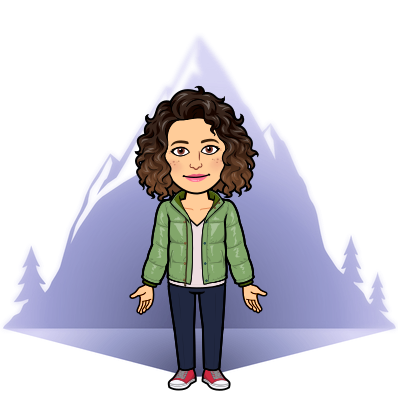
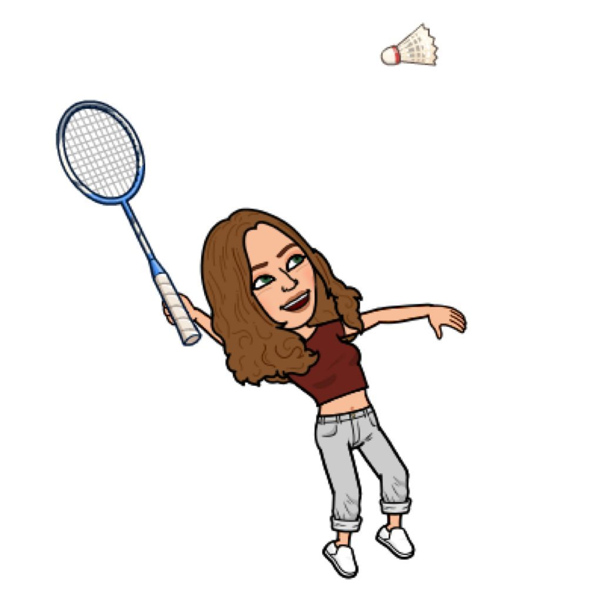
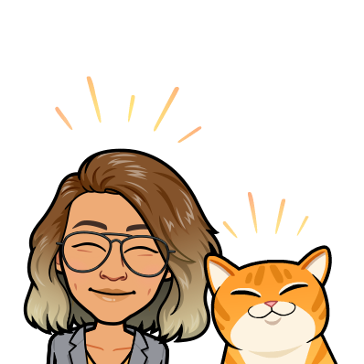

"This is the way and we are your tools"
Equipo
Diferentes ramas que se fusionan a la perfección. Somos un grupo
hetereogéneo de cuatro mujeres con una misma meta, convertirnos en
programadoras Front-End.
Con alta capacidad resolutiva y mucho entusiasmo esperamos también
poder aportar nuestro granito de arena para hacer crecer la
presencia femenina en el sector tecnológico.
Fortalezas
En Adatools nos gusta tomar las decisiones de forma consensuada y
el apoyo entre compañeras es esencial en nuestro equipo, aspecto
que consideramos de gran importancia para llevar a cabo un trabajo
bien hecho. Para nosotras el diálogo y el compromiso son clave en
el proceso de convertirnos en programadoras de calidad.
Debilidades
Somos un equipo muy heterogéneo que estamos descubriendo por
primera vez el mundo de la programación y aunque nos falta la
experiencia ¡nos sobran las ganas de seguir aprendiendo! Además, convertir nuestras debilidades en
fortalezas es la clave para superar los retos a los que nos enfrentamos como nuevas desarrolladoras.
Quiénes somos

Teresa Martínez
Soy una apasionada de la lectura y la montaña, aunque mis
estudios iban encaminados hacia la geología y el medio ambiente,
he decidido dar un giro de 180º en mi carrera profesional y
adentrarme en el mundo del front-end de la mano de Adalab.

Marina Fernández
Tras interesarme por mil y una actividades diferentes y cursar
mis estudios en Traducción e Interpretación descubrí Adalab y
enseguida me embaucó. El mundo de la programación aún es un gran
desconocido para mí pero he venido para quedarme y hacer de ello
mi nueva profesión.

Marta García
Encantada de poder descubrir el mundo de la programación con
Adalab. Soy graduada en ADE y llevaba un tiempo buscando mi
sitio en el sector equivocado. La programación front-end es todo
un mundo por descubrir, es hablar de futuro y de nuevos retos,
nadie dijo que el camino fuera fácil pero pienso alcanzar la
meta.
Nadia Murias
Tras varios años en una agencia de marketing dedicándome a la
medición de sitios web de diversos sectores y empresas, he
decidido pasar del análisis de datos a la creación de páginas.
Adalab me ha ayudado en este camino para cambiar mi futuro y
convertirme en una auténtica desarrolladora front-end.